Desigualdad social de las riquezas en el mundo de hoy
La desigualdad económica se traduce en una disponibilidad de recursos económicos muy dispar entre los individuos de la sociedad. Y con un reparto de riquezas, cada vez es mayor la brecha entre individuos ricos y pobres, y las oportunidades de unos y otros. La desigualdad económica, como el resto de las caras de la desigualdad, es un obstáculo para cualquier persona. La importancia de medir la desigualdad en una sociedad se fundamenta en la necesidad de dar soluciones a las carencias que están enfrentando los que la sufren. Al encontrar la forma de medir la pobreza es posible dar soluciones pues se contará con la información de cuántos pobres hay y en dónde se encuentran, para después comprender por qué son pobres.
Causas y factores que contribuyen a la desigualdad económica
Desigualdad en el acceso a la educación y las oportunidades.
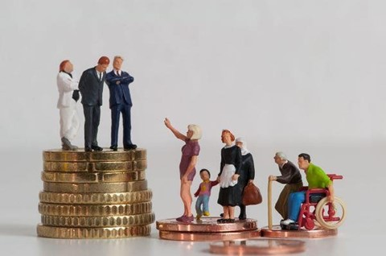El acceso limitado a una educación de calidad y oportunidades laborales bien remuneradas puede crear disparidades en la movilidad social y exacerbar la desigualdad económica entre personas con diferentes niveles de educación y habilidades.
Aumento de la tasa de desempleo.
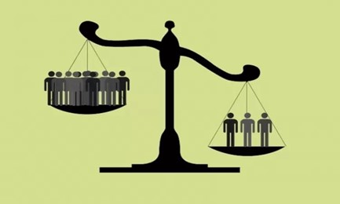Aumento del índice de violencia y criminalidad generado por el grupo de individuos vulnerables para sobrevivir a la crisis y dominar sobre un grupo de personas. Atraso en el progreso económico del país. Desnutrición y mortalidad infantil por la falta de recursos económicos.
Tecnología y automatización.
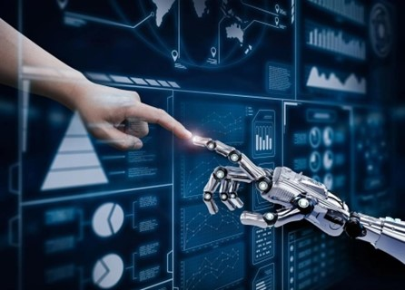El progreso tecnológico y la automatización pueden crear desigualdad económica, ya que algunas industrias y trabajos pueden volverse obsoletos, mientras que otros pueden beneficiarse de la innovación y aumentar la rentabilidad.
Discriminación y desigualdad de género

La discriminación por género y otras formas de discriminación pueden llevar a que ciertos grupos de la población tengan menos oportunidades económicas y, por lo tanto, enfrenten mayores niveles de desigualdad
La evasión fiscal
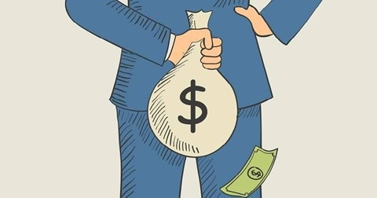Es algo tan sencillo como no pagar los impuestos correspondientes. Y algo tan grave que pone en riesgo el acceso a los servicios básicos de toda la ciudadanía. Las personas adineradas y grandes empresas ponen en marcha complejas estructuras de planificación fiscal para evitar su desembolso.
El libre comercio
La apertura económica y la globalización generaran beneficios económicos, pero también contribuyen a la desigualdad, ya que algunas industrias y países pueden prosperar mientras otros se ven perjudicadas.
Brecha entre los ricos y los pobres en diferentes regiones del mundo
América Latina
Esta región es conocida por tener altos niveles de
desigualdad económica. A pesar de que ha tenido algunos
avances
en la reducción de la pobreza en algunos países, la
brecha entre ricos y pobres sigue siendo considerable.
América Latina es sin duda la peor parada: aunque la
desigualdad se ha reducido últimamente en América
Latina,
sigue siendo la región más desigual en cuanto a
ingresos.
Asia
En Asia, la situación varía según el país. Países como India, Pakistán y Filipinas, tienen altos niveles de desigualdad, mientras que otros países como China, han experimentado reducciones notables en la pobreza y la desigualdad en las últimas décadas.
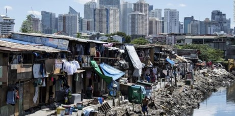África
Muchos países de la región enfrentan pobreza severa y desigualdad económica. Los factores contribuyentes incluyen la dependencia de las materias primas, la inestabilidad política, los conflictos armados y la falta de oportunidades económicas y educativas. Países como Sudáfrica y Nigeria también enfrentan grandes disparidades en la riqueza.
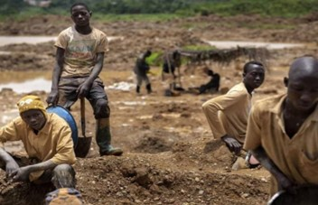Estudios de casos sobre países con altos niveles de desigualdad económica.
África
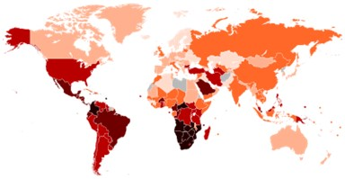Según el banco mundial, el crecimiento económico en África subsahariana bajó del 4,1 % en 2021 al 3,6 % en 2022, y se proyecta que la actividad económica en la región se desacelerará aún más al 3,1 % en 2023. La revisión a la baja de las proyecciones es producto de la lentitud persistente de la economía mundial, tasas de inflación en descenso, pero elevadas, y condiciones financieras globales e internas difíciles en medio de altos niveles de deuda. Se estima que el crecimiento repuntará al 3,7 % en 2024 y al 3,9 % en 2025.
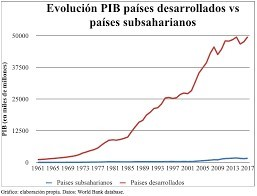En África subsahariana, la deuda pública se ha triplicado desde 2010. El déficit fiscal de la región aumentó al 5,2 % del PIB en 2022, en comparación con el 4,8 % del PIB estimado para 2021. El débil crecimiento, combinado con una rápida acumulación de deuda pública, ha incrementado la mediana del coeficiente deuda pública-PIB del 32 % en 2010 al 57 % en 2022 (56 % en África occidental y central; 64 % en África oriental y meridional).
Colombia
En el largo plazo el IPM ha mostrado una reducción importante al pasar del 86 % en 1997 a 37.1% en 2020. Eso significa que, de 24 millones de personas en hogares con al menos 5 privaciones en 1997, se pasó a 9.2 millones de personas consideradas pobres multidimensionalmente en 2020.
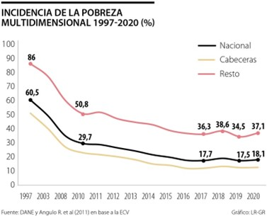La mayor disminución se dio entre 1997 y 2010, con una reducción de 30 puntos porcentuales en esos años. Lo anterior, se explica principalmente por el fuerte aumento en las coberturas educativas y de aseguramiento en salud observadas entre 2003 y 2008, periodo en el cual la afiliación al régimen subsidiado experimentó un gran crecimiento por la decisión del Gobierno de aumentar dicha cobertura. En el período comprendido de 2010 a 2020 la caída fue cercana al 40%, lo cual muestra que la mejora en la calidad de vida no se ha detenido.
Mexico
A partir del año 2000, cuando la Secretaría de Desarrollo Social implementó por primera vez la medición oficial de la pobreza, el 53% de la población fue considerada en esa situación, (Sedesol, 2002).
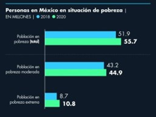Las mediciones que se han realizado posteriormente dan cuenta de que el índice de pobreza se ha mantenido sin grandes cambios, tanto en la década pasada, como en la actual. A partir del año 2008, momento en el cual la medición de la pobreza fue encargada al Consejo Nacional de Evaluación de la Política Social, se encuentran cifras oficiales sumamente elevadas. En ese año la pobreza era de 47.4%, en 2010 era de 46.1%, en 2012 de 45.5% y en 2014, año de la última medición disponible hasta el momento,1 era de 46.2% de la población mexicana.
Como podemos observar se han establecido medidas para que la brecha económica disminuya cada vez más, pero no en todos los países ha sido lo mismo hay algunos que están mejorando cada vez más mientras otros se quedan estancados.
Impacto de la desigualdad social en el desarrollo de la democracia
La desigualdad social puede tener un impacto negativo en el desarrollo y la estabilidad de la democracia. Cuando la brecha entre los grupos sociales es amplia, se crea un escenario en el cual los intereses y necesidades de diferentes segmentos de la población pueden entrar en conflicto. Esto puede generar tensiones y polarización política, lo que dificulta la construcción de consensos y la adopción de políticas que beneficien al conjunto de la sociedad.
Además, la desigualdad puede afectar el acceso a la participación política. Los grupos más desfavorecidos, que a menudo enfrentan mayores obstáculos económicos y sociales, pueden tener dificultades para involucrarse plenamente en el proceso político. Esto puede resultar en una representación desigual en las instituciones democráticas, donde los intereses de los grupos más ricos y poderosos pueden ser sobrevalorados en comparación con los de los grupos más vulnerables.
Para fortalecer la democracia y reducir la desigualdad social, es esencial garantizar un acceso equitativo a la educación, la atención médica y las oportunidades económicas para todos los ciudadanos. Asimismo, fomentar la inclusión y la diversidad en los procesos políticos puede ayudar a asegurar que se escuchen las voces de todos los ciudadanos, sin importar su origen social o económico.
Relación entre la desigualdad de riqueza y la participación política de diferentes grupos sociales
La relación entre la desigualdad de riqueza y la participación política es compleja y multifacética. Las personas y grupos con mayores recursos económicos suelen tener más influencia en la política debido a su capacidad para financiar campañas, contratar grupos de presión y ejercer presión en los medios de comunicación. Esta influencia puede traducirse en políticas que benefician sus intereses, lo que puede exacerbar aún más la desigualdad. Por otro lado, aquellos con menos recursos pueden encontrar dificultades para participar activamente en el proceso político debido a la falta de fondos y recursos. Esto puede resultar en una menor representatividad de sus intereses en las decisiones políticas.
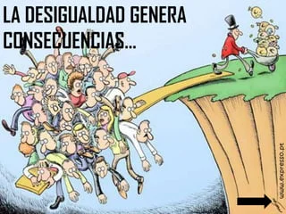Sin embargo, es importante destacar que no todas las personas ricas tienen los mismos intereses y puntos de vista políticos, y que hay una amplia variedad de opiniones y perspectivas dentro de cualquier grupo social. Además, existen mecanismos democráticos para contrarrestar el exceso de influencia de los intereses particulares, como la transparencia en la financiación política y la participación ciudadana activa.
Efectos de la desigualdad económica en la toma de decisiones políticas y la representatividad en los sistemas democráticos.
La desigualdad económica puede distorsionar la toma de decisiones políticas y afectar la representatividad en los sistemas democráticos. Cuando un pequeño grupo de personas o corporaciones controla una gran parte de la riqueza, pueden ejercer una influencia desproporcionada en el proceso político. Esto puede resultar en políticas que benefician a los intereses de ese grupo en detrimento de la mayoría de la población.
Además, la desigualdad económica puede afectar la representatividad en las instituciones democráticas. Si los candidatos y funcionarios electos provienen principalmente de la élite económica, pueden tener una comprensión limitada de las luchas y desafíos que enfrentan las personas de bajos ingresos. Esto puede llevar a políticas que no abordan adecuadamente las necesidades de los sectores más vulnerables de la sociedad.
Para abordar estos desafíos, es fundamental implementar medidas que fomenten una mayor igualdad económica y una participación política más equitativa. Esto puede incluir reformas en la financiación de campañas políticas, el fomento de la participación ciudadana y la promoción de una mayor diversidad y representación en la política.
Impacto de la desigualdad social en el desarrollo del socialismo
La desigualdad social juega un papel crucial en el desarrollo y la evolución del socialismo. El socialismo es una ideología política y económica que busca la igualdad y la equidad en la distribución de la riqueza, los recursos y el poder. Por lo tanto, la desigualdad social se considera un problema fundamental que el socialismo busca abordar y corregir. Aquí hay algunas formas en las que la desigualdad social impacta el desarrollo del socialismo:
- Motivación ideológica: La desigualdad económica y social puede ser una motivación fundamental para la adopción y propagación del socialismo. Cuando una sociedad experimenta grandes disparidades en el acceso a la educación, la atención médica, el empleo y otros recursos básicos, puede aumentar el apoyo a las ideas socialistas que buscan redistribuir la riqueza y brindar igualdad de oportunidades para todos.
- Formación de clases: La desigualdad tiende a dividir a la sociedad en diferentes clases sociales, como los ricos y los pobres. El socialismo, en muchos de sus enfoques, busca eliminar o reducir drásticamente estas divisiones de clases, promoviendo la propiedad colectiva o estatal de los medios de producción para garantizar una distribución más equitativa de la riqueza y el poder.
- Movimientos y revoluciones: A lo largo de la historia, las desigualdades extremas han sido un factor que contribuye a los movimientos socialistas y a las revoluciones. Las condiciones de pobreza y explotación pueden fomentar la organización de las clases oprimidas en busca de un cambio radical en la estructura socioeconómica.
- Desarrollo de políticas económicas y sociales: La desigualdad puede llevar a la adopción de políticas socialistas como la nacionalización de industrias clave, la implementación de programas de seguridad social y la provisión de servicios públicos para garantizar que todos los ciudadanos tengan acceso a necesidades básicas.
- Legitimidad y estabilidad del sistema capitalista: La desigualdad extrema también puede llevar a la crítica y el cuestionamiento del sistema capitalista, que a menudo se asocia con la concentración de riqueza en manos de unos pocos. Esta crítica puede impulsar la adopción de políticas socialistas como un medio para contrarrestar los efectos negativos de la desigualdad.
- Problemas sociales y descontento: La desigualdad puede dar lugar a una serie de problemas sociales, como la falta de acceso a la atención médica, la educación deficiente y la falta de vivienda. Estos problemas pueden generar descontento generalizado y aumentar el apoyo a las soluciones socialistas que buscan abordar estas cuestiones fundamentales.
La desigualdad social es crucial en la evolución del socialismo, una ideología que busca equidad en la distribución de riqueza, recursos y poder. El socialismo se origina como respuesta a la desigualdad económica y social, motivando movimientos y revoluciones. Busca eliminar divisiones de clases y adoptar políticas de seguridad social y servicios públicos para garantizar igualdad de oportunidades. La crítica al sistema capitalista por su concentración de riqueza también impulsa el socialismo. La desigualdad genera problemas sociales y descontento, aumentando el apoyo a soluciones socialistas que aborden esas cuestiones.
Casos de países que han intentado implementar políticas socialistas y han enfrentado desafíos relacionados con la desigualdad de riqueza.
Ciertamente, varios países han intentado implementar políticas socialistas para abordar la desigualdad de riqueza y han enfrentado desafíos en el proceso. Aquí hay algunos ejemplos:
- Venezuela: En la última década, Venezuela ha implementado políticas socialistas bajo la presidencia de Hugo Chávez y posteriormente de Nicolás Maduro. Estas políticas incluyeron nacionalización de industrias clave, programas de bienestar social y distribución de recursos. Sin embargo, la economía venezolana se vio afectada por la caída de los precios del petróleo, la corrupción y la mala gestión, lo que resultó en hiperinflación, escasez de alimentos y una crisis humanitaria. Aunque se buscaba reducir la desigualdad, la situación económica y social se deterioró significativamente, afectando desproporcionadamente a los sectores más vulnerables de la sociedad.
- Cuba: Cuba ha mantenido un sistema socialista durante décadas, con la nacionalización de la mayoría de las industrias y la implementación de políticas de igualdad social. Aunque logró avances en la educación y la atención médica, la economía cubana ha enfrentado desafíos significativos debido al embargo económico de Estados Unidos y a problemas de planificación centralizada. La desigualdad de riqueza y las limitaciones en la libertad económica han persistido a lo largo de los años.
- Unión Soviética: Durante gran parte del siglo XX, la Unión Soviética implementó un sistema socialista basado en la planificación centralizada y la propiedad estatal de los medios de producción. A pesar de sus esfuerzos por eliminar la desigualdad económica, surgieron problemas como la burocracia, la falta de incentivos para la innovación y la corrupción. Estos desafíos llevaron a una distribución ineficiente de los recursos y, en última instancia, al colapso del sistema en 1991.
- China: China experimentó un cambio significativo en sus políticas económicas en las últimas décadas, pasando de un enfoque más socialista a una economía de mercado socialista. Aunque el país ha logrado un crecimiento económico impresionante y ha sacado a millones de personas de la pobreza, también ha experimentado un aumento en la desigualdad de ingresos y disparidades regionales. La rápida industrialización y urbanización han presentado desafíos en la gestión de la desigualdad y la protección de los derechos de los trabajadores.
Enfoques y políticas para reducir la desigualdad social de las riquezas
Para reducir la desigualdad social de las riquezas, se pueden implementar una serie de enfoques y políticas que buscan equilibrar la distribución de los recursos económicos y mejorar las condiciones de vida de los grupos más desfavorecidos. debemos implementar:
- Impuestos progresivos: Implementar sistemas fiscales progresivos donde los que tienen mayores ingresos pagan proporcionalmente más impuestos que los de ingresos más bajos. Esto ayuda a redistribuir la riqueza y reduce la brecha entre los más ricos y los más pobres
- Transferencias sociales: Establecer programas de transferencias sociales, como subsidios y transferencias directas de efectivo a los hogares de bajos ingresos, para proporcionar un apoyo financiero que mejore su bienestar económico.
- Acceso a servicios básicos: Garantizar el acceso universal a servicios básicos como educación, atención médica de calidad y servicios de vivienda adecuados, lo que puede mejorar la movilidad social y reducir las desigualdades intergeneracionales.
- Empoderamiento económico: Implementar políticas que promuevan el empoderamiento económico de los grupos marginados, como mujeres, jóvenes y minorías, brindándoles igualdad de oportunidades y acceso a recursos.
- Políticas laborales justas: Establecer leyes que protejan los derechos laborales, aseguren un salario digno, fomenten la sindicalización y promuevan condiciones de trabajo seguras y saludables.
- Educación y capacitación: Invertir en educación y capacitación continua para mejorar las habilidades de la fuerza laboral, lo que aumenta las oportunidades de empleo y la movilidad económica.
- Inclusión financiera: Promover el acceso a servicios financieros para las personas de bajos ingresos, como cuentas bancarias, microcréditos y seguros, para facilitar el ahorro, la inversión y la protección contra riesgos económicos.
- Desarrollo regional equitativo: Impulsar el desarrollo económico en regiones menos favorecidas mediante inversiones en infraestructuras y programas que generen empleo y oportunidades de negocio.
- Políticas de igualdad de género: Implementar políticas que promuevan la igualdad de género en el acceso a oportunidades económicas y sociales, ya que esto puede contribuir a reducir la brecha de riqueza.
- Reducción de la corrupción: Combatir la corrupción y mejorar la transparencia en la gestión de los recursos públicos para garantizar una distribución más equitativa de los beneficios económicos.
Democracia y Socialismo a Través de los Siglos: Un Análisis de la Desigualdad de Riqueza
La Antigua Grecia: Cuna de la Democracia
En la antigua Grecia, el surgimiento de la democracia fue una respuesta a la desigualdad de riqueza y poder concentrado en las manos de una élite. Atenas, una de las ciudades-estado más destacadas, estableció sistemas políticos que permitían a los ciudadanos participar en la toma de decisiones. Sin embargo, es importante mencionar que la democracia en esta época era limitada y excluía a esclavos y mujeres. A pesar de sus limitaciones, este período sentó las bases para futuras luchas por la igualdad en la participación política.
Revoluciones Liberales: Desigualdad y Lucha por la Representación
Las revoluciones liberales del siglo XVIII y XIX, como la Revolución Americana y la Revolución Francesa, marcaron un cambio significativo en la historia política. Estos movimientos buscaban la igualdad de derechos y la representación del pueblo en el gobierno, desafiando las estructuras monárquicas y aristocráticas que perpetuaban la desigualdad de riqueza. Estas revoluciones allanaron el camino para la creación de repúblicas democráticas y establecieron la noción de que el poder político debe derivar del consentimiento de los gobernados.
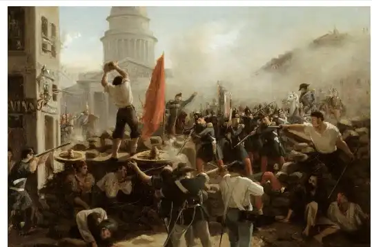Revolución Industrial y Desigualdad Económica
La Revolución Industrial en el siglo XIX trajo consigo una aceleración en la desigualdad económica. El rápido crecimiento económico y tecnológico generó una concentración de riqueza en manos de empresarios y propietarios de tierras, mientras que las condiciones laborales para la clase trabajadora se deterioraron. En este contexto, surgieron movimientos obreros y sindicatos que lucharon por mejorar las condiciones laborales y reducir la brecha entre ricos y pobres.
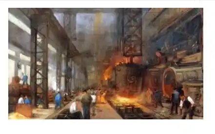Siglo XX: El Socialismo en Escena
El siglo XX fue testigo de la consolidación de estados socialistas en varios países. Estos regímenes buscaban abordar la desigualdad económica mediante la colectivización de los medios de producción y la redistribución de la riqueza. Si bien el socialismo ofrecía una alternativa al sistema capitalista, también enfrentó críticas y desafíos, como la centralización del poder político y la restricción de libertades individuales.
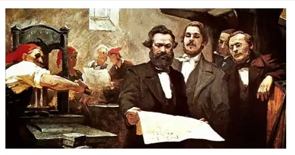Desafíos Contemporáneos: Globalización y Tecnología
En el siglo XXI, la globalización económica ha llevado a una mayor interconexión entre las economías del mundo. Si bien esto ha generado crecimiento económico, también ha intensificado la desigualdad de ingresos en muchas partes del mundo. Grandes corporaciones y mercados financieros ejercen una influencia significativa en los procesos democráticos, lo que plantea desafíos para la democracia y la capacidad de los gobiernos para abordar la desigualdad.
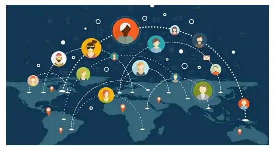Modelos Económicos y su Impacto en la Desigualdad Social y el Desarrollo Político: Estudio Comparativo de Países
Modelo Capitalista: Estados Unidos
Estados Unidos es un ejemplo clásico de una economía capitalista. Su sistema se ha caracterizado por la libertad de mercado y la propiedad privada de los medios de producción. Aunque ha logrado un alto desarrollo económico y tecnológico, también ha experimentado una creciente desigualdad de ingresos en las últimas décadas. La concentración de riqueza en manos de unos pocos ha llevado a tensiones sociales y ha planteado desafíos para la cohesión social y el desarrollo político.
Modelo Socialista: Cuba
Cuba es un país que ha seguido un modelo socialista durante décadas, con una economía planificada y una fuerte intervención estatal en los sectores clave. Este enfoque ha logrado avances significativos en áreas como la educación y la atención médica, garantizando servicios básicos para la población. Sin embargo, también ha enfrentado dificultades económicas y limitaciones en cuanto a la libertad política y de expresión. La desigualdad en Cuba ha sido relativamente baja, pero también ha habido una falta de movilidad social.
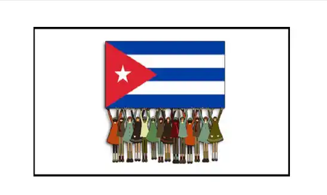Economía Mixta: Suecia
Suecia es un ejemplo de economía mixta, donde el Estado interviene en áreas clave como la educación y la atención médica, mientras que el sector privado también juega un papel importante en la economía. Suecia ha logrado un alto nivel de desarrollo humano y una baja desigualdad de ingresos en comparación con muchos otros países. Su sistema político se caracteriza por una democracia estable y una fuerte protección de los derechos civiles.
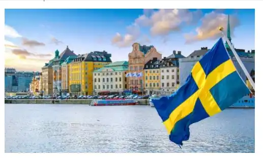Modelo Capitalista de Bienestar: Alemania
Alemania es otro ejemplo de una economía mixta, pero con un enfoque particular en el "capitalismo de bienestar". Ha mantenido un sistema de seguridad social sólido y ha invertido en educación y capacitación laboral, lo que ha ayudado a reducir la desigualdad y mejorar la movilidad social. Su sistema político es una democracia parlamentaria que ha demostrado estabilidad y participación ciudadana activa.
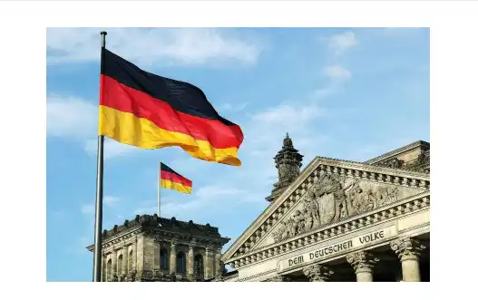Modelo Extractivista: Venezuela
Venezuela ha seguido un modelo económico basado en la explotación de recursos naturales, como el petróleo. Aunque durante un tiempo experimentó una disminución en la desigualdad y mejoras en indicadores sociales, también se ha enfrentado a problemas como la corrupción y una alta dependencia del petróleo. En los últimos años, ha enfrentado una profunda crisis económica y política, con un aumento significativo en la desigualdad y tensiones sociales.
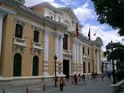Impacto de la globalización en la desigualdad social y la respuesta políticas:
Análisis de como la globalización ha afectado la desigualdad económica a nivel mundial:
La globalización ha tenido un impacto
significativo en la desigualdad económica a
nivel mundial. Si
bien ha habido algunos avances en la
reducción de la desigualdad en algunos
aspectos, como la
reducción de la desigualdad de ingresos en
ciertos países y la existencia de beneficios
comerciales
preferenciales para los países de bajos
ingresos, la desigualdad aún persiste.
La globalización económica ha llevado a una
mayor integración de las economías a través
del
comercio y los flujos financieros. Esto ha
permitido el crecimiento económico en muchos
países y
ha brindado oportunidades para la movilidad
social y el desarrollo. Sin embargo, también
ha
contribuido a un aumento en la desigualdad.
A medida que las empresas se expanden a
nivel global, se enfrentan a una mayor
competencia y
buscan reducir costos. Esto a menudo implica
la externalización de la producción a países
con
mano de obra más barata, lo que puede
conducir a la pérdida de empleos en los
países
desarrollados y a un aumento de la brecha
salarial.
Además, la desigualdad también se ve
exacerbada por las asimetrías de poder y la
distribución
desigual de los beneficios de la
globalización. Los países más ricos y las
grandes corporaciones
multinacionales a menudo tienen más recursos
y capacidad para aprovechar los beneficios
de la
globalización, mientras que los países más
pobres y las personas en situaciones
vulnerables
pueden tener dificultades para competir en
el mercado global.
La desigualdad económica a nivel mundial
tiene consecuencias significativas. Puede
llevar a
tensiones sociales, conflictos y descontento
generalizado. Además, también puede socavar
el
desarrollo sostenible y obstaculizar los
esfuerzos para reducir la pobreza y promover
la igualdad de
oportunidades.
.jpg)
En respuesta a estos desafíos, los gobiernos y las instituciones internacionales han adoptado medidas para abordar la desigualdad económica, como la implementación de políticas públicas orientadas a reducir la brecha entre ricos y pobres, promover la educación y la capacitación, y mejorar los sistemas de protección social.
Bibliografias
Libros
- "Capital in the Twenty-First Century" (El capital en el siglo XXI) por Thomas Piketty
- "The Spirit Level: Why Greater Equality Makes Societies Stronger" (El nivel de espíritu: por qué una mayor igualdad hace que las sociedades sean más fuertes) por Richard Wilkinson y Kate Pickett
- "The Great Leveler: Violence and the History of Inequality from the Stone Age to the Twenty-First Century" (El gran nivelador: la violencia y la historia de la desigualdad desde la Edad de Piedra hasta el siglo XXI) por Walter Scheidel
- "The Theory of Justice" (La teoría de la justicia) por John Rawls